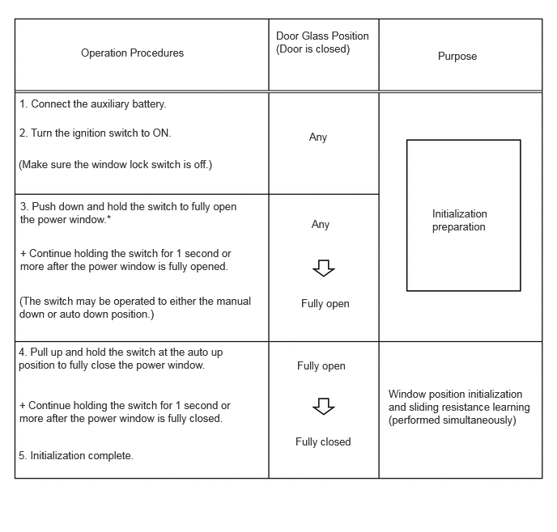
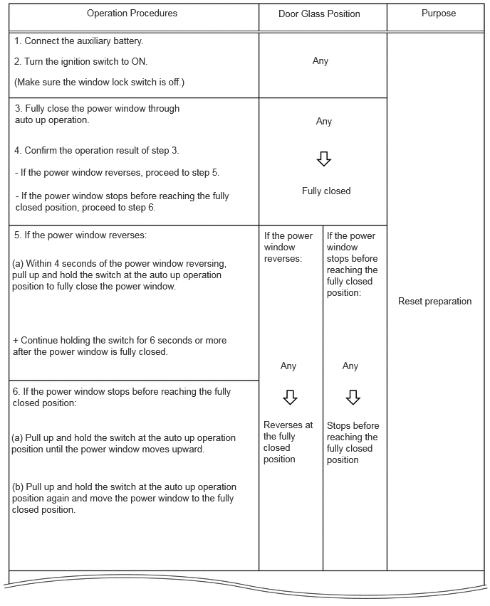
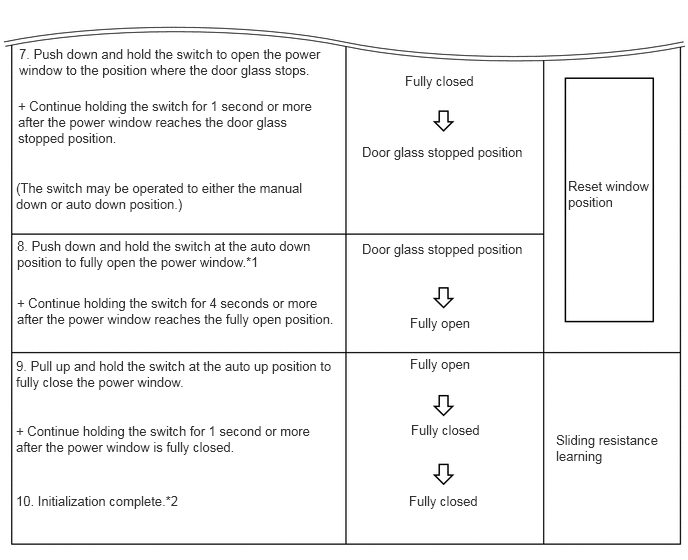
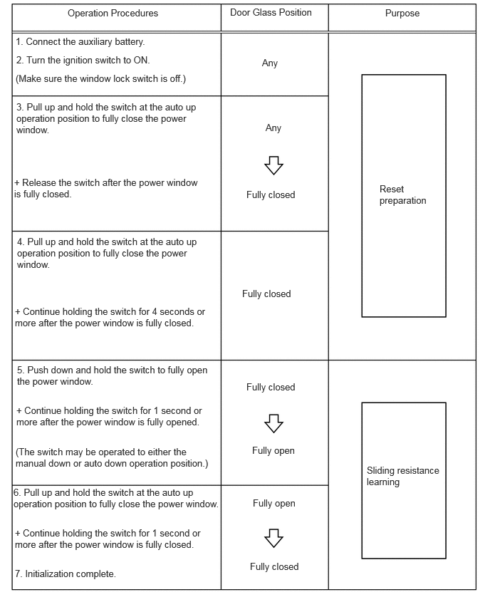

- Power window regulator motor assembly has been removed/installed or a door glass and/or door glass run, etc. have been removed/installed or replaced with new ones.
- Power window cannot be fully opened via a down operation (door glass remains visible).
- Power window cannot be fully closed (erroneously operates in reverse) after initialization.
- Power window cannot be fully opened (erroneously stops) after initialization.
- Instructions to perform initialization appear in other troubleshooting procedures.
| Last Modified: 12-09-2025 | 6.11:8.1.0 | Doc ID: RM100000002IQCR |
| Model Year Start: 2024 | Model: Tacoma | Prod Date Range: [12/2023 - ] |
| Title: WINDOW / GLASS: POWER WINDOW CONTROL SYSTEM: REGISTRATION; 2024 - 2026 MY Tacoma Tacoma HV [12/2023 - ] | ||
REGISTRATION
PROCEDURE
PROCEDURE
1. INITIALIZE POWER WINDOW CONTROL SYSTEM (for Door Window)
NOTICE:
- When any of the door window regulator sub-assemblies, power window regulator motor assemblies, door glass or door glass runs have been removed and reinstalled, the power window control system must be initialized. Functions such as the auto up and down function, jam protection function, catch protection function, remote control function, key-linked function, wireless transmitter-linked function, key-off operation function, window open warning function and suggestion service function will not operate if initialization is not performed.
- When performing initialization, do not perform any other procedures.
- Make sure to park the vehicle and turn off all electrical systems before performing initialization. Initialization will be canceled if the vehicle is driven during initialization.
- When performing initialization, use the power window switch of each door to initialize each power window.
- Make sure not to hit, strike or vibrate the door glass during initialization because the vehicle is learning the sliding resistance of the door glass.
- Make sure not to turn the ignition switch off during initialization.
HINT:
-
If initialization cannot be completed properly, the LIN communication system may be malfunctioning.
Click here
![2024 MY Tacoma Tacoma HV [12/2023 - 03/2024]; NETWORKING: LIN COMMUNICATION SYSTEM: HOW TO PROCEED WITH TROUBLESHOOTING](../../../../stylegraphics/info.gif)
- If the auxiliary battery has been replaced, it is not necessary to initialize the power window regulator motor assemblies.
-
The initialization status of the power window of each seat can be checked using the Data List.
Click here
(a) Perform initialization according to the table below.
|
Condition of Power Window |
Proceed to |
|---|---|
|
A power window regulator motor assembly has been replaced with a new one. |
Procedure A |
|
HINT: Use this procedure if a power window regulator motor assembly is being reused. |
Procedure B |
|
Power window unexpectedly operates in reverse or stops due to a change in the sliding resistance after a fitting adjustment is made. |
Procedure C |
(b) Procedure A
(1) Perform window position initialization (fully closed, fully open) and sliding resistance learning.
HINT:
*: Even if the door glass is in the fully open position before performing step 3, push down and hold the switch for 1 second or more.
(c) Procedure B
(1) Perform window position initialization (fully closed, fully open) and sliding resistance learning.
Reset the power window position, perform window position initialization (fully closed, fully opened) and sliding resistance learning.
 HINT:
*1: After performing step 7, release the switch, and then perform an auto down operation.
*2: After completing initialization, check that the power window can be fully closed using an auto up operation.
If initialization cannot be completed properly, the LIN communication system may be malfunctioning.
Click here
(d) Procedure C
(1) Perform sliding resistance learning.
HINT:
If the jam protection function or catch protection function continues to operate even after performing steps 4, 5 and 6, perform the procedure again from step 3.
|
|
|